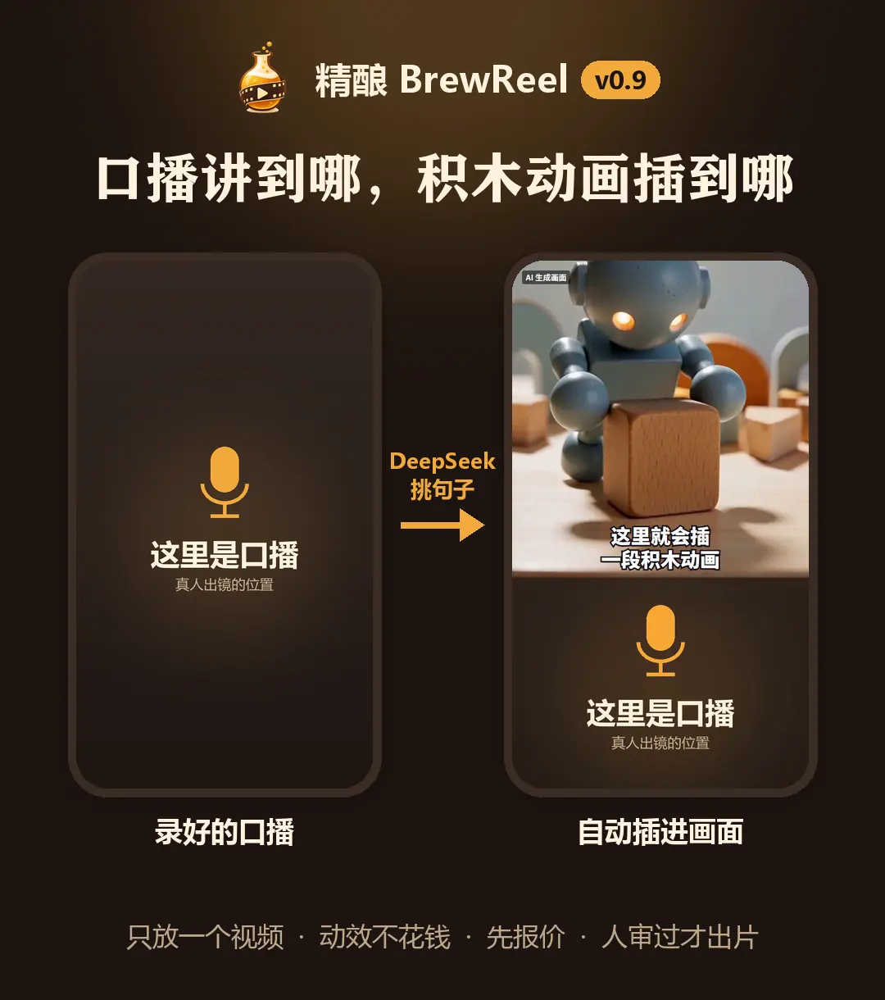

卡片信息流cards

- 画幅
- 9:16
- 看点
- 渐变底 + 居中白卡片 + 描边大字幕，一镜讲一件事
- 适合
- 单一卖点、使用流程、界面演示、实物和门店、价目表
开源 · Apache-2.0 · 可商用 · 预览版v0.12.0
两条路，都是一条命令：写一份产品简报，出一支竖版宣传片；或只放一段口播，配上解释用的画面。
宣传片可以装成 Claude Code、Codex、opencode 的 skill，或用 DeepSeek Harness 插件，也能不用 agent 直接跑脚本。口播配画面是另一条命令。
还是预览版：成片先当初稿，看完整片、改完再发。现在能用到什么程度
精酿 · BrewReel 是开源工具，有两种玩法。宣传片：你提供产品简报，语言模型编写分镜，程序按配方在本机渲染。口播配画面：只放一段口播视频，一条命令配上动效画面或 AI 画面。成片都需要人工检查后再发布。
项目作者：Finderchangchang。安装步骤、实测记录和已知限制以 GitHub 项目文档为准。
No.01配方单
分镜里写 meta.style 选配方，不写就是默认的 cards。每种配方自带设计令牌、镜头组件、校验规则和叙事模板。
cardsquiz
journey
怎么选
quizjourneycards不写就是它No.02口播配画面
已经有一段口播，就不用再写简报。本机转写之后，DeepSeek 逐句选：不花钱的动效画面，或 AI 画面。时间、费用和合成都由脚本做。
v0.9 起可用
node scripts/talk.mjs <项目目录> --out <输出目录>项目目录里放 talk.mp4。这一条会本机转写（第一次下载约 240MB 模型）、让 DeepSeek 逐句选画面、再出片。输出目录不能放在仓库里面。默认 AI 画面最多 2 段。先出的占位片不花钱；换成 MiniMax 真生成要先估价，人看过审片页并自己批准，才出正式片。口播配画面要完整版 ffmpeg。

不花钱。字只能照抄口播原话，说到哪个字亮到哪个字。v0.11 起可选剪纸拼贴外观：纸纹底、手剪卡片，说到重点词卡片抛起再落下。v0.12 起出片后自动检查动效有没有卡住或闪烁，有问题不交付。
用 MiniMax H3 生成小场景，全片共用一个机器人。默认最多 2 段。手绘线稿是实验，只能占位预览。
动效画面、本机转写、合成不花钱。AI 画面花钱前先印估价，人审批准才出正式片。MiniMax 订阅 key 按积分显示，4 秒大约 280 积分，以 MiniMax 后台为准。
风格工厂v0.10
用一句话描述材质和色调，脚本起草一个 AI 画面风格。看图只是第一道筛，最后要人自己决定收不收。
DeepSeek 写配置，出参考图。MiniMax 看图，按检查表把关：字、凸点、像不像知名作品、嘴、天线、空白。自动挑图，再做一张静态试拍。可选再做 4 秒视频试拍，这一步花积分。然后是汇总页。
node scripts/broll/new-style.mjs --id <id> --name <名字> --desc "<一句话>"不加 --yes 只打印将要发送的请求，不调接口。确认后再加上。4 秒视频试拍要同时加 --video 和 --yes，提交前会印出大约 280 积分。node scripts/broll/approve-style.mjs <id> 只能人在终端里跑，助手不能代批。欢迎造好了贡献回来。
No.03上手
先把渲染环境装好、跑通仓库自带的样例。宣传片再挑一种方式让模型写分镜；口播配画面用下面第三条命令。
git clone https://github.com/Finderchangchang/brewreel.git
cd brewreel/template && npm install && npx remotion browser ensure
cd .. && pip install numpy scipy imageio-ffmpeg
node scripts/validate.mjs examples/ledger.json
node scripts/make.mjs examples/ledger.json --out ../brewreel-out/ledgernpm install 装渲染引擎，npx remotion browser ensure 下载一次 Chrome Headless Shell。校验那条通过就说明装好了；出片那条要几分钟，终端末行出现「交付：<mp4 路径>」才算出片。--out 不能指向仓库里面。口播配画面还要完整版 ffmpeg，安装里的 imageio-ffmpeg 就是这份。Remotion 自带的那份是精简版，缺滤镜，不够用。
装成 skill可用
适合能读 SKILL.md 的 AI 编程助手。把整个仓库 clone 到 ~/.claude/skills/brewreel/（Claude Code）或 ~/.agents/skills/brewreel/（通用约定），然后把简报交给助手（模板见 brief-template.md），让它照 SKILL.md 出片。
装成 Claude Code 的 skill
git clone https://github.com/Finderchangchang/brewreel.git ~/.claude/skills/brewreelexport ANTHROPIC_BASE_URL=https://api.deepseek.com/anthropic
export ANTHROPIC_AUTH_TOKEN=<你的 DeepSeek API Key>
export ANTHROPIC_MODEL=deepseek-flash[1m]无头脚本可用
脚本直接调 OpenAI 兼容接口（默认 DeepSeek）：简报进、视频出，校验报错会原样回喂给模型重试，至多 3 次。
export LLM_API_KEY=<你的 DeepSeek API Key>
export LLM_BASE_URL=https://api.deepseek.com
export LLM_MODEL=deepseek-flash
python scripts/llm_make.py path/to/brief.mdWindows PowerShell 用 $env:LLM_API_KEY="..." 代替 export。以上都是占位符，换成你自己的 key；不要把 key 提交进仓库或写进 issue。加 --dry-run 不调接口、不读密钥，只把拼好的提示写出来并估算 token 数。
DeepSeek Harness已发布到 npm
已发布到 npm。插件还没接真实 DeepSeek 模型实测，遇到问题请开 issue。
装上后，模型照着 skill 写分镜，校验、出片、核对都调插件的 7 个工具完成：查环境、装依赖、列配方与行业、读说明、校验分镜、后台出片带进度、核对成片。需要 dsh 0.1.7-rc.2 或更高的 0.1.x（npm 上 dsh 的 latest 标签目前还指向更早的 0.1.5-rc.3，所以安装时要写明版本号）、Node.js 22.19+ 的 22.x 或 24+，以及 pnpm。
npm install -g @deepseek-ai/dsh@0.1.7-rc.2 pnpm # 还没装 dsh 时
dsh plugin --profile web add dsh-brewreel
dsh webweb 可以换成你自己的 profile 名，profile 已经在运行的要重启才生效。初次使用时对模型说「检查一下视频插件环境」，它会调 doctor，经你同意后再调 setup 装渲染依赖。想用仓库里还没发版的代码，可以 clone 后在上一级目录执行 dsh plugin --profile web add ./brewreel/integrations/deepseek-harness。插件这一版没有接口播配画面。
node scripts/talk.mjs <项目目录> --out <输出目录>项目目录里放 talk.mp4，输出目录不能放在仓库里面。第一次转写会下载约 240MB 模型。画面、费用和限制见口播配画面。
No.04怎么酿
好酒靠配方。强模型先把一种风格调成配方：现成组件加校验规则。DeepSeek 这类便宜模型照着配方填分镜，校验、配乐、渲染、质检都交给脚本。
01你
商家或你自己填，有通用模板，六个行业另有专用模板。
brief.md
02你或模型
meta.style 选配方，meta.industry 选行业包。
meta
03便宜模型
只输出一份 JSON：挑镜头、填文字，不写代码、不算坐标。
storyboard.json
04脚本
硬性规则加广告法、行业合规；报告指出哪一镜哪个字段要改，回喂给模型。
validate.mjs
05脚本
配乐 → 渲染 → 拼图 → 检查帧 → 交付清单，有 ✗ 就不交付。
video.mp4
06你
照片授权、评价真实性、价格条件这些机器判断不了的事，由发布者确认。
自查清单
《广告法》极限词、六个行业的合规规则、断词换行、安全区等几十条校验，报错用中文写清楚哪里要改。
版式、空帧、英文片混进汉字，任何一项自查不过就不交付；每支片带 manifest.json，绑定分镜。
代码现场合成原创配乐，按镜头切点卡拍，响度统一到 -16 LUFS，没有版权问题。
文档双语；字幕可选中文或英文，英文片每半拍扫一次画面，混进汉字就不交付。
分镜里写 meta.voice、每镜写一句 vo 就带配音，MiniMax / 阿里云 / 火山引擎三家可选。镜头时长跟着旁白走，字幕逐字点亮，配乐在人声处自动压低约 10 dB；同一句只合成一次，改画面、重渲染不再计费。
数据图表镜头可以画条形、折线、点图、堆叠、环形，图上的数字必须能在事实原文里找到。cards 另有 12 套可选配色，不选时老分镜的画面不变。
No.05行业包
分镜里写 meta.industry 选行业。每个行业包带合规规则、推荐的镜头结构、给商家的简报模板和一份回归测试简报。

software
food
ecommerce
education
beauty
travel校验会拦
不做的品类
校验规则没覆盖，硬要做也不保证合规。
No.06已知限制
这是预览版。下面照实写，用之前先看一遍。
预览版
目前还不建议把成片不经人工修改直接对外发布。
测试和修复仍在进行中。把成片当初稿：看完整片再改再发，不要只看校验通过就发。
建议用法：行业片尽量配商家实拍照片，出片时传 --brief <简报>，交付前把画面上每个价格、条件、日期、营业时间、距离逐条和简报对一遍。
v0.2.0 发布前的那一轮，让小模型扮演便宜模型：只给简报和 SKILL.md，从零写分镜、跑校验、出片。7 分是我们定的「可以直接发」的线。
| 类别 | 整体 | 合规 |
|---|---|---|
| 软件 / 工具类 | 5–6 | 7–8 |
| 行业片 | 4–5 | 4–5 |
talk.srt，错了直接改。imageio-ffmpeg（pip install imageio-ffmpeg），或自己把 ffmpeg 放进 PATH，也可以设环境变量 FFMPEG。meta.facts 的内容生效。No.07为什么叫精酿
先让强模型把一种视频风格做到位，再把它的版式、动效、节奏和规则写成一份「配方」：现成组件加校验脚本。之后 DeepSeek 这类便宜模型就是普通原料，照着配方填分镜，就能酿出同一水准的片子。
路径和字段沿用原名：styles/、meta.style、distill/。
直接拿现成配方开酿。
node scripts/gen-styles.mjs --new <id> 生成新风格，换配色、字体、角色；只换配色，改 tokens.json 就行。
按 distill/ 的六步流程拆一支参考视频：抽帧、拆解、复刻、再设计、组件化、便宜模型测试和评审。
骨架可以保留：叙事结构、节奏、动效、镜头语言。皮肤必须重做：配色、角色、招牌细节。check-originality.mjs 自动检查和参考片的配色色差（CIEDE2000），招牌清单每一条都要写明换成了什么或已删除。
把安装步骤和使用方法写清楚，遇到问题可以直接回来查。
从本地依赖到样例出片，再到产品简报与发布检查。把环境是否可用、模型是否写对和成片是否能发布分开验证。
把卖什么、给谁看、真实卖点、价格条件和素材来源写清楚。提供空白 Markdown 模板和明确标为虚构的餐饮示例。
No.08常见问题
没找到答案？提一个 issue，或公众号私信。
还不建议。把成片当初稿：看完整片，改掉别扭的文案和重复的卖点再发；行业片把画面上每个价格、条件、日期、营业时间、距离逐条和简报对一遍。实测情况见「现在能用到什么程度」。
本项目免费开源。模型调用、配音接口，以及口播配画面里的 AI 画面，用你自己的 key，按服务商的用量结算，项目不经手任何费用；渲染在你自己的电脑上跑。动效画面、本机转写和合成不花钱。渲染引擎 Remotion 对 4 人及以上的营利组织收费，见下面 Remotion 那一条。
动效画面、本机转写和合成不花钱。AI 画面用 MiniMax H3，花钱前先估价，人审批准才出正式片。默认最多 2 段。订阅套餐的 key 按积分显示，4 秒大约 280 积分；按量付费的 key 按秒计，价目表上 768P 是 0.5 元/秒。默认上限下，一部片的 AI 画面按价目表大约 2–12 元，订阅 key 大约 280–1680 积分。实际扣费以 MiniMax 后台为准。DeepSeek 写方案用你自己的 key。
可以自己造一个。风格工厂用一句话描述材质和色调：
node scripts/broll/new-style.mjs --id <id> --name <名字> --desc "<一句话>"
DeepSeek 写配置，出参考图。MiniMax 看图，按检查表把关：字、凸点、像不像知名作品、嘴、天线、空白。自动挑图，再做静态试拍。可选再做 4 秒视频试拍，这一步花积分。汇总页给人看。approve-style.mjs 只能人在终端里跑，助手不能代批。欢迎造好了贡献回来。
仓库里现成的正式风格是木积木（默认）、黏土定格、分层纸艺，全片共用一个机器人。手绘线稿还是实验，只能占位预览。
可以商用。项目以 Apache-2.0 开源，个人和公司都可以使用、修改、再分发，或集成进自己的产品，不需要付费或事先授权。再分发或二次开发请保留 LICENSE、NOTICE，并注明出处，推荐写法：
基于 精酿 BrewReel（https://github.com/Finderchangchang/brewreel）二次开发用它做出的视频不要求署名。别用「精酿」「BrewReel」名称或 brewreel.com 暗示由原作者出品或背书。渲染依赖的 Remotion 另有许可，见下一条。
Remotion 是源码可见、非开源的软件：个人、3 人及以下的营利公司、非营利组织可免费使用（含商用）；4 人及以上的营利组织需要购买 Remotion 的 Company License，详见 remotion.dev/license。本仓库的 Apache-2.0 不改变 Remotion 自己的许可条件。
本仓库把 remotion / @remotion/cli 钉在 4.0.529。升级到 5.0 后，Remotion 免费层需要在配置里传 licenseKey（个人 / 3 人以下公司 / 非营利填 free-license），升级前请先看 THIRD_PARTY_LICENSES.md。
scripts/make_bgm.py 用 numpy / scipy 现场合成：乐器、和声、旋律、混音、母带都在脚本里，不用外部素材库。每个镜头一个段落，音符落在整拍 / 半拍，镜头切换处有镲或加花，所以音乐是卡着镜头走的；响度校到 -16 LUFS。
因为是现场合成的，没有版权问题。正式发抖音这类平台时，也可以出片时加 --no-bgm 出静音版，再在平台里配乐。
有。v0.5.0 起接了 MiniMax 语音合成，v0.5.1 起也可以用阿里云（百炼 CosyVoice）和火山引擎（豆包语音）。分镜里写 meta.voice 和每镜的 vo，设好对应的环境变量（MINIMAX_API_KEY / DASHSCOPE_API_KEY / VOLCENGINE_TTS_API_KEY）后出片即可；镜头时长跟着旁白走，字幕逐字点亮，配乐在人声处自动压低。没有 key 时加 --voice-provider mock 用占位音预览节奏。不写 meta.voice 就和以前一样没有配音。用 AI 配音发布时，记得按平台要求勾选 AI 生成内容声明。
项目不生成「看起来像真实拍摄」的拟真图片。没有商家素材时，画面用组件和简笔插画兜底，并明确标注，不冒充实拍。有商家实拍照片（门店、成品、价目表）时，用实拍镜头放进去，可信度会好很多；照片是否授权会列进「需人工复核」。
国内网络环境下 npx remotion browser ensure 可能连不上 Google 的下载地址。可以手动下载后用 --browser-executable 指定本地 Chrome / Chromium 路径（不同 Chrome 版本渲染结果可能有细微差异）。
只支持 x64。环境变量用 PowerShell 写法 $env:LLM_API_KEY="..."，不是 export。分镜一律用文件路径传入，不要在命令行拼 JSON（Windows shell 会吃掉引号）。make.mjs 在 Windows 上调 python，装在别处的，设环境变量 PYTHON 指过去。
开源、可商用。点个 Star，新配方上线时不错过。
想听真实需求：你想给什么产品做片？缺哪种配方、哪个行业？哪条合规规则误伤了你？公众号私信或开 issue 都行。
误伤或漏拦的校验规则、渲染出错、看着别扭的画面，能附上分镜 JSON 和报错就更好。别贴 API Key。